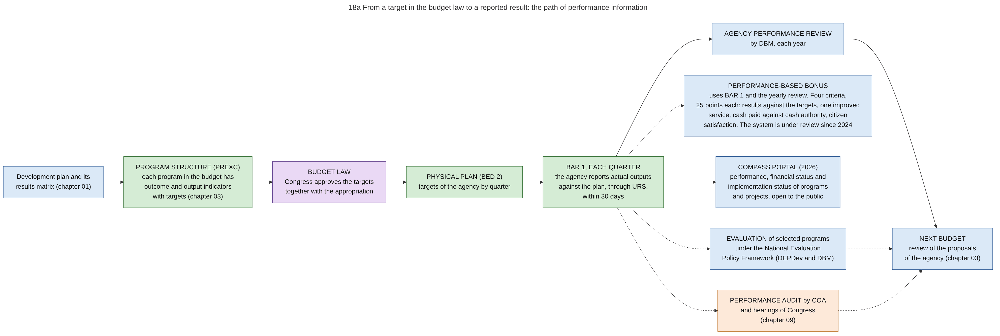

Diagram 18a · Mermaid flowchart
From a target in the budget law to a reported result: the path of performance information
Question: The budget law contains targets in units (for example classrooms built), not only amounts in pesos. Where is a target written, who reports the result, who checks the report, and who uses it?

What the diagram shows
- Question: the budget law contains targets in units (for example classrooms built), not only amounts in pesos. Where is a target written, who reports the result, who checks the report, and who uses it?
- Idea: performance information has its own line of records, parallel to the line of money. The target is fixed with the appropriation. The result is reported by the agency itself each quarter. DBM reviews the results each year. Three other users take the same reports for other purposes: the bonus system, the public portal, and the evaluators and auditors.
- How to read it: the row from left to right is the main path through one year. The column after the quarterly report shows the five uses of the reported results. Three of them lead to the next budget. Blue = executive. Purple = Congress. Green = spending agency. Light orange = audit. Dotted arrows = information.
- When the path works: a target that is a count of things delivered by the agency itself (for example kilometres of road completed) can be reported and checked against contracts and acceptance reports.
- When it fails: a target that depends on other actors (for example the rate of school completion) can be reported, but the report does not show whether the spending caused the result. That question needs an evaluation (see 18b).
- Sources: program structure with outcome and output indicators in the budget proposal [NBM156]. Physical plan (BED 2) [NBC599]. Quarterly Physical Report of Operations (BAR 1) through URS within 30 days after each quarter [JC2019-1]. Agency Performance Review, and the four criteria of the bonus: performance results against the targets approved by Congress, process results, financial results (cash disbursements against the NCA received), citizen satisfaction, 25 points each [PBB2024]. Suspension of the earlier performance management and incentive systems for review [EO61]. National Evaluation Policy Framework of 2015, revised in 2025, with a steering committee [NEPF][NEPF-NEWS]. COMPASS portal: program and project performance, financial performance and implementation status for the public [EO126]. Monitoring of selected projects with digital images [ROADMAP-MID]. Assessment: "Agencies publish service delivery objectives, outputs, and outcomes annually" (indicators 8.1 to 8.4, score A) [PEFA2025].
- General knowledge, not opened in a source here: the results matrix of the development plan as the origin of the indicators, the performance audits of COA, and the use of the review in the next budget.
Code

---
title: "18a From a target in the budget law to a reported result: the path of performance information"
config:
flowchart:
wrappingWidth: 900
---
flowchart LR
%% QUESTION THIS DIAGRAM ANSWERS: the budget law contains targets in units (for example classrooms built), not only amounts in pesos. Where is a target written, who reports the result, who checks the report, and who uses it?
%% IDEA: performance information has its own line of records, parallel to the line of money. The target is fixed with the appropriation. The result is reported by the agency itself each quarter. DBM reviews the results each year. Three other users take the same reports for other purposes: the bonus system, the public portal, and the evaluators and auditors.
%% READING: the row from left to right is the main path through one year. The column after the quarterly report shows the five uses of the reported results. Three of them lead to the next budget. Blue = executive. Purple = Congress. Green = spending agency. Light orange = audit. Dotted arrows = information.
%% WHEN THE PATH WORKS: a target that is a count of things delivered by the agency itself (for example kilometres of road completed) can be reported and checked against contracts and acceptance reports.
%% WHEN IT FAILS: a target that depends on other actors (for example the rate of school completion) can be reported, but the report does not show whether the spending caused the result. That question needs an evaluation (see 18b).
%% SOURCES: program structure with outcome and output indicators in the budget proposal [NBM156]. Physical plan (BED 2) [NBC599]. Quarterly Physical Report of Operations (BAR 1) through URS within 30 days after each quarter [JC2019-1]. Agency Performance Review, and the four criteria of the bonus: performance results against the targets approved by Congress, process results, financial results (cash disbursements against the NCA received), citizen satisfaction, 25 points each [PBB2024]. Suspension of the earlier performance management and incentive systems for review [EO61]. National Evaluation Policy Framework of 2015, revised in 2025, with a steering committee [NEPF][NEPF-NEWS]. COMPASS portal: program and project performance, financial performance and implementation status for the public [EO126]. Monitoring of selected projects with digital images [ROADMAP-MID]. Assessment: "Agencies publish service delivery objectives, outputs, and outcomes annually" (indicators 8.1 to 8.4, score A) [PEFA2025].
%% GENERAL KNOWLEDGE, NOT OPENED IN A SOURCE HERE: the results matrix of the development plan as the origin of the indicators, the performance audits of COA, and the use of the review in the next budget.
P1["Development plan and its<br/>results matrix (chapter 01)"]:::exec
P2["PROGRAM STRUCTURE (PREXC)<br/>each program in the budget has<br/>outcome and output indicators<br/>with targets (chapter 03)"]:::agy
P3["BUDGET LAW<br/>Congress approves the targets<br/>together with the appropriation"]:::leg
P4["PHYSICAL PLAN (BED 2)<br/>targets of the agency by quarter"]:::agy
P5["BAR 1, EACH QUARTER<br/>the agency reports actual outputs<br/>against the plan, through URS,<br/>within 30 days"]:::agy
P6["AGENCY PERFORMANCE REVIEW<br/>by DBM, each year"]:::exec
P7["NEXT BUDGET<br/>review of the proposals<br/>of the agency (chapter 03)"]:::exec
P1 --> P2 --> P3 --> P4 --> P5 --> P6 --> P7
U1["PERFORMANCE-BASED BONUS<br/>uses BAR 1 and the yearly review. Four criteria,<br/>25 points each: results against the targets, one improved<br/>service, cash paid against cash authority, citizen<br/>satisfaction. The system is under review since 2024"]:::exec
U2["COMPASS PORTAL (2026)<br/>performance, financial status and<br/>implementation status of programs<br/>and projects, open to the public"]:::exec
U3["EVALUATION of selected programs<br/>under the National Evaluation<br/>Policy Framework (DEPDev and DBM)"]:::exec
U4["PERFORMANCE AUDIT by COA<br/>and hearings of Congress<br/>(chapter 09)"]:::aud
P5 -.-> U1
P5 -.-> U2
P5 -.-> U3
P5 -.-> U4
U3 -.-> P7
U4 -.-> P7
classDef default fill:#ffffff,stroke:#444444,color:#111
classDef exec fill:#dbe9f7,stroke:#1f4e8c,color:#111
classDef leg fill:#ead9f5,stroke:#5b3a8c,color:#111
classDef agy fill:#d5ecd5,stroke:#2e6b2e,color:#111
classDef aud fill:#fde9d9,stroke:#b35a00,color:#111